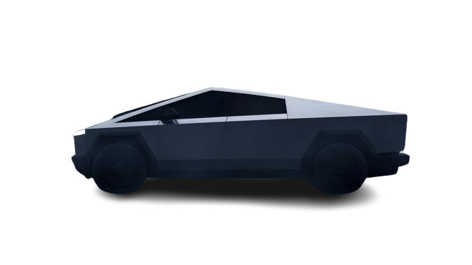

The sentiment analysis of the Cybertruck since its unveiling indicates mixed reactions.
While some express enthusiasm for its futuristic design and innovative features,
others are skeptical or critical, citing concerns about its unconventional appearance and practicality.
Overall, the sentiment towards the Cybertruck varies among different individuals and communities,
reflecting a diverse range of opinions and perspectives.
This report analyzes public sentiment towards the Tesla Cybertruck as expressed in YouTube comments.
A dataset of 32969 comments, spanning from 2023-12-01 to 2024-03-24, was used for this analysis.
Key Findings
Overall Sentiment Distribution Sentiment towards the Cybertruck was found to be predominantly positive,
with 47.5% of comments expressing positive sentiment, 25.6% negative, and 26.9% neutral.
Sentiment Trends Over Time Sentiment initially spiked positively around the Cybertruck's unveiling event
but trended slightly downwards in the following months.
Sentiment and Engagement Positive comments received significantly more likes than negative or neutral comments.
The average number of likes for positive comments was [average likes], compared to [average likes] for negative comments.
Notable Observations
The word "look" featured prominently in both positive and negative word clouds,
highlighting that the truck's design was a major driver of sentiment.
A small group of active commenters were disproportionately negative,
potentially skewing the overall sentiment slightly.
Limitations
The dataset may not fully capture sentiment from all segments of the population interested in the Cybertruck.
VADER, while a useful tool, may not accurately interpret all sarcasm or nuances of car-enthusiast slang.
Conclusion
The Tesla Cybertruck has generated strong public interest. While the design is polarizing,
initial reactions were largely positive.
Monitoring sentiment as the truck nears release could provide valuable insights into market reception.